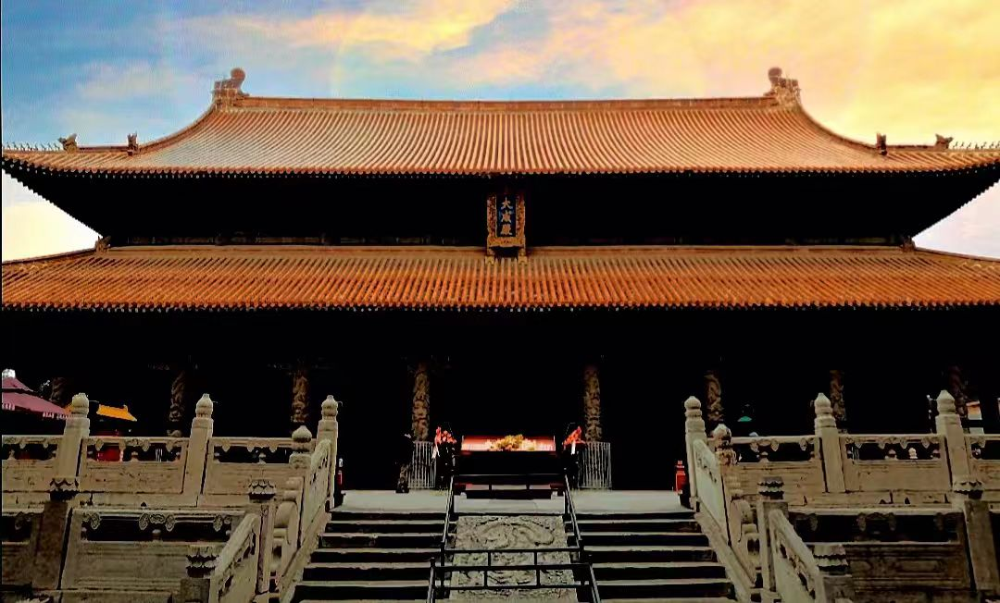

传奇：曲阜孔庙位于山东省曲阜市中心，是中国现存规模最大、历史最久、保存最完整的祭祀孔子的庙宇，与北京故宫、承德避暑山庄并称"中国三大古建筑群"。始建于公元前478年，即孔子逝世后的第二年，鲁哀公将孔子故宅改建为庙，岁时奉祀。历经2000多年的历代扩建重修，形成现有规模。1994年被联合国教科文组织列入《世界遗产名录》，是儒家文化的圣地，中华民族的文化象征。
核心看点：
游览攻略：
交通信息：曲阜孔庙位于山东省曲阜市神道路。从曲阜东站（高铁站）乘K01路公交直达"孔庙南门"站，车程20分钟。从曲阜汽车站乘1路、2路、5路公交可达。距济南遥墙机场180公里，车程2.5小时；距济宁曲阜机场80公里，车程1小时。建议与孔府、孔林（三孔景区）组合游览，购买联票。周边有尼山圣境、孔子六艺城等景点。
春秋初创：鲁哀公十六年（前479年）孔子逝世，次年（前478年），鲁哀公将孔子故宅三间改建为庙，"岁时奉祀"，是为孔庙之始。当时"庙屋三间"，内藏孔子生前所用"衣、冠、琴、车、书"。西汉高祖十二年（前195年），刘邦过鲁，"以太牢祀孔子"，开帝王祭孔先例。
魏晋南北朝：北魏太和十三年（489年），孝文帝下诏在京城平城（今大同）建孔庙，开外地建孔庙先河。北齐天保元年（550年），诏各地郡学立孔庙。这一时期，曲阜孔庙多次重修，规模渐大。
唐宋扩建：唐太宗贞观四年（630年），诏州县皆立孔庙。唐乾封元年（666年），唐高宗封禅泰山，至曲阜祭孔，赠孔子"太师"。北宋大中祥符元年（1008年），宋真宗封禅泰山，至曲阜祭孔，追谥孔子为"玄圣文宣王"。天禧二年（1018年），大修孔庙，建藏书楼（奎文阁前身）。元祐元年（1086年），增建大殿（大成殿前身）。
金元时期：金明昌二年至六年（1191-1195年），大修孔庙，形成"殿、庑、阁、亭三百六十余楹"的规模。元至大四年（1311年），元武宗加封孔子为"大成至圣文宣王"。元至顺二年（1331年），孔庙用天子礼乐，立"官员人等至此下马"碑。
明代鼎盛：明弘治十二年（1499年），孔庙遭雷击，大部分建筑焚毁。弘治十三年至十七年（1500-1504年），明孝宗拨银15.2万两，大规模重建，形成现存基本格局。正德八年（1513年），建"金声玉振"坊。嘉靖十七年（1538年），建"太和元气"坊。
清代至今：清雍正二年（1724年），孔庙又遭雷击，大成殿等主要建筑焚毁。雍正三年至八年（1725-1730年），雍正帝拨银15.7万两重建，历时6年，用匠工6.6万，建成现存建筑。民国时期，孔庙得到保护。1961年，被列为全国重点文物保护单位。1994年，与孔府、孔林一起列入《世界遗产名录》。2005年，启动大规模维修工程。
总体布局：孔庙坐北朝南，沿中轴线对称布局，南北长1120米，东西宽140-153米，占地约16万平方米。全庙共有九进院落，殿堂阁庑466间，分三路：中路祭祀孔子及先贤先儒，东路祭祀孔子上五代祖先，西路祭祀孔子父母。这种布局体现了"前庙后学""左昭右穆"的礼制思想。
九进院落：①第一进：万仞宫墙至金声玉振坊；②第二进：金声玉振坊至棂星门；③第三进：棂星门至圣时门；④第四进：圣时门至弘道门；⑤第五进：弘道门至大中门；⑥第六进：大中门至同文门；⑦第七进：同文门至奎文阁；⑧第八进：奎文阁至大成门；⑨第九进：大成门至圣迹殿。九进象征"九重天"，体现孔子至高地位。
大成殿建筑：大成殿是孔庙核心建筑，规制极高。①屋顶：重檐歇山顶，铺黄色琉璃瓦，这是皇家建筑才能使用的规格；②开间：面阔九间，进深五间，符合"九五之尊"的帝王规制；③柱础：用覆盆式莲花柱础，为唐代风格；④斗拱：外檐用七踩单翘重昂斗拱，内檐用五踩重翘斗拱；⑤彩绘：金龙和玺彩绘，是清代最高等级的彩绘。大成殿的规格超过北京故宫太和殿以外的所有宫殿。
蟠龙石柱：大成殿檐下10根深浮雕蟠龙石柱，是孔庙建筑艺术的精华。每根高5.98米，直径0.81米，用整块巨石雕成。每柱雕两条对翔蟠龙，中雕宝珠，四周绕云焰，柱脚衬以山石波涛。龙姿生动，云水翻腾，雕刻深度达10-20厘米。这10根石柱是明代弘治年间遗物，历时500年仍保存完好。
奎文阁结构：奎文阁是中国古代木结构楼阁的典范。采用"明三暗二"结构，外观三层，内部实为两层。梁架结构独特：①底层：用"通柱造"，柱子从地面直通二层楼板；②二层：用"叉柱造"，上层柱脚插入下层斗拱；③顶层：用"缠柱造"，柱子用斜撑加固。这种结构使奎文阁抗震性能极强，历经多次地震而不倒。
碑刻艺术：孔庙保存历代碑刻2000余通，是中国第二大碑林（仅次于西安碑林）。①十三碑亭：有金、元、明、清碑亭13座，内存碑刻55通；②汉魏碑刻陈列馆：存汉代碑刻19通，魏碑1通，包括《乙瑛碑》《礼器碑》《史晨碑》等名碑；③玉虹楼法帖：清乾隆年间孔继涑刻，收历代书法家作品584块。这些碑刻是研究历史、书法、石刻艺术的珍贵资料。
历史沿革：祭孔始于孔子逝世后的第二年（前478年），鲁哀公于孔子故宅立庙祭祀。汉高祖刘邦过鲁祭孔，开帝王祭孔先例。东汉时，祭孔成为国家大典。唐玄宗开元二十七年（739年），追谥孔子为"文宣王"，祭孔用"太牢"（牛、羊、猪三牲）。宋代，祭孔升为中祀。明代，祭孔用"八佾舞"（64人）。清代，祭孔用"大祀"，与祭天、祭地、祭太庙同等级。
释奠礼：祭孔的正礼称"释奠礼"。程序：①迎神：奏《昭平之章》，主祭、分献官就位；②初献：献帛、献爵，奏《宣平之章》，舞"八佾舞"；③亚献：献羹、献食，奏《秩平之章》；④终献：献果、献茶，奏《叙平之章》；⑤读祝：读祭文；⑥饮福受胙：主祭饮酒、受胙（祭肉）；⑦撤馔：撤供品，奏《懿平之章》；⑧送神：奏《德平之章》；⑨望燎：焚烧祭品。整个仪式约一小时。
现代祭孔：现代祭孔大典在每年9月28日孔子诞辰日举行。①时间：上午9:28开始，取孔子诞辰之意；②地点：曲阜孔庙大成殿前；③主祭：山东省省长或国家领导人；④参与者：孔子后裔、专家学者、国际友人、各界代表等数千人；⑤程序：沿用古代释奠礼，但简化了部分环节；⑥特色：增加了"诵读《论语》"、"中学生成人礼"等现代内容。祭孔大典通过电视、网络向全球直播。
八佾舞：祭孔时表演的乐舞。佾是舞列，八佾是八行八列，共64人，是天子才能使用的规格。舞生手持"羽"（雄尾）和"籥"（竹管乐器），按"三献礼"（初献、亚献、终献）分别表演。舞姿庄重典雅，体现"中和""礼让"的儒家精神。八佾舞是中国古代雅乐舞的活化石。
祭孔乐舞：祭孔时演奏的雅乐。乐器有"八音"：金（钟）、石（磬）、丝（琴、瑟）、竹（箫、管）、匏（笙）、土（埙）、革（鼓）、木（柷、敔）。乐曲有"六章"：《昭平》《宣平》《秩平》《叙平》《懿平》《德平》。歌词为四言古诗，歌颂孔子功德。祭孔乐舞被列为国家级非物质文化遗产。
祭器祭品：祭孔用器、用牲、用乐都有严格规定。①祭器：用青铜器或仿古瓷器，有爵、尊、簋、簠、豆、笾等；②祭品：太牢（牛、羊、猪）、五谷、时果、茶酒等；③祭服：主祭穿古代祭服（明代或清代式样），舞生、乐生穿特定服装；④祭文：用文言文写成，歌颂孔子功德，祈求国泰民安。这些规制体现了"祭如在"的诚敬之心。
世界遗产价值：1994年12月，曲阜孔庙、孔林、孔府被联合国教科文组织列入《世界遗产名录》。世界遗产委员会评价："孔子是公元前6世纪到公元前5世纪中国春秋时期伟大的哲学家、政治家和教育家。孔夫子的庙宇、墓地和府邸位于山东省的曲阜。孔庙是公元前478年为纪念孔夫子而兴建的，千百年来屡毁屡建，到今天已经发展成超过100座殿堂的建筑群。孔林里不仅容纳了孔夫子的坟墓，而且他的后裔中，有超过10万人也葬在这里。当初小小的孔宅如今已经扩建成一个庞大显赫的府邸，整个宅院包括了152座殿堂。曲阜的古建筑群之所以具有独特的艺术和历史特色，应归功于2000多年来中国历代帝王对孔夫子的大力推崇。"
历史价值：孔庙是2000多年儒家文化发展史的实物见证。①建筑史：历代修建，体现了不同时期的建筑风格和技术；②文化史：反映了儒家思想从一家之说到国家意识形态的演变；③政治史：见证了历代帝王对孔子的尊崇和对儒家思想的利用；④社会史：记录了祭孔礼仪、科举制度、宗法制度等社会制度的变迁。孔庙是研究中国历史、文化、思想、建筑的百科全书。
建筑价值：孔庙是中国古代建筑的杰出代表。①规制完整：九进院落，中轴对称，体现了完整的礼制建筑体系；②等级最高：大成殿用黄色琉璃瓦、面阔九间，超过一般王府、寺庙的规格；③工艺精湛：木结构、石雕、彩绘、瓦作等工艺，代表了中国古代建筑技术的最高水平；④保存完好：现存建筑多为明清原构，保存状况良好。孔庙是研究中国古代建筑的活教材。
艺术价值：孔庙是综合性艺术宝库。①雕塑艺术：蟠龙石柱、石狮、华表等，雕刻精美；②书法艺术：2000多通碑刻，涵盖篆、隶、楷、行、草各体，是书法艺术的宝库；③绘画艺术：圣迹图石刻、彩绘壁画等；④工艺美术：祭器、礼器、家具等，工艺精湛。孔庙集建筑、雕塑、书法、绘画、工艺艺术于一体。
文化价值：孔庙是儒家文化的物质载体和精神象征。①祭祀功能：2000多年的祭孔传统，传承了中华礼乐文明；②教育功能：历史上的学宫，培养了大批人才；③象征功能：是中华文化的象征，凝聚了民族认同；④传播功能：通过祭孔、研学、交流等活动，传播儒家思想和中华优秀传统文化。孔庙是"活着的文化遗产"。
保护与传承：孔庙得到科学保护和合理利用。①法律保护：1961年列为全国重点文物保护单位；②规划保护：编制《曲阜孔庙保护规划》，划定保护区、缓冲区；③工程保护：实施古建筑维修、彩绘修复、防雷、消防等工程；④研究展示：成立孔子研究院，举办国际儒学论坛，出版《孔子研究》《曲阜孔庙》等著作；⑤活态传承：恢复祭孔大典，开展"论语背诵""开笔礼""成人礼"等传统文化活动；⑥国际交流：与世界各地孔子学院、文庙开展文化交流。孔庙的保护经验，为世界文化遗产保护提供了范例。